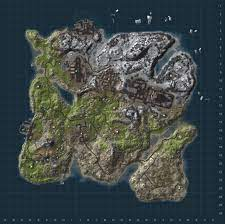

aqui tenemos uno de los posibles mapas en rust si entras en la imagen podras ver todos los mapas posibles. En cada uno de ellos hay ubicaciones de looteo para poder conseguir armas, explosivos,materiales para poder progresar.